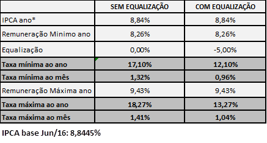

Banco do Empreendedor - MPE
Created Wednesday 21 May 2014
Atualizado em 07/04/2016
Esta linha é indicada para Micro e Pequenas empresas que desejam realizar investimentos em ampliação, modernização, aquisição de máquinas e equipamentos com a possibilidade de capital de giro associado.
PÚBLICO ALVO
Micro empresas com Faturamento Anual até R$ 360 mil
Pequenas empresas com Faturamento Anual até R$ 3,6 milhões
** Empresas que faturam até R$ 60 mil só podem pegar MICROCRÉDITO **
LIMITES DE FINANCIAMENTO
Orientar o cliente que o limite de financiamento depende do faturamento anual da empresa
- Os Financiamentos nesta linha são a partir de R$ 20 mil até R$ 100 mil
- Pode ser financiado até 100% dos itens financiáveis para empresas com mais de 12 meses de faturamento.
- Para empresas com menos de 12 meses o limite máximo de financiamento é de 60% dos itens financiáveis (vide Empresa com menos de 12 meses)
** Importante! Por orientação da Diretoria de Operações e Diretoria Financeira, informar o cliente que financiamentos nesta linha estão limitados a até R$ 100 mil **
Para valores acima de R$ 100 mil oferecer as seguintes linhas:
- Se a necessidade do cliente for máquinas e equipamentos: Linha BNDES FINAME
- Se a necessidade do cliente for capital de giro puro: Linha BNDES PROGEREN
TAXAS DE JURO
Esta linha possui taxa subsidiada pelo Governo do Estado.
Para que o cliente consiga o subsídio ele deve cumprir contratualmente a MANUTENÇÃO DOS EMPREGOS e PAGAR AS PARCELAS EM DIA.
A verificação da manutenção dos empregos será realizada pela Fomento Paraná diretamente no CAGED do MIn. do Trabalho.
Perda do subsídio
- Caso seja verificado que houve diminuição do nº de empregos, o subsídio será cortado até que os empregos sejam recompostos.
- Caso ocorra atraso no pagamento das parcelas o subsídio será cortado nos meses em que as parcelas permanecerem em atraso.
- Caso ocorra atraso em 3 parcelas (sucessivas ou não sucessivas) o subsídio será cortado para o restante do contrato.
A taxa de juros desta linha é PÓS-FIXADA em IPCA (ìndice de preços acumulado), ou seja, sempre que índice sofrer alteração a taxa de juros também muda para mais ou para menos conforme mudança no IPCA.
Comparativo de Taxas:

Importante! As taxas finais dos contratos somente serão atribuídas após análise de crédito.
PRAZO DE FINANCIAMENTO
- Até 60 meses incluindo prazo de carência.
- Carência máxima de 12 meses. Mínima obrigatória de 3 meses.
- Durante o período de carência há incidência de juros que serão pagos trimestralmente pelo cliente.
- Após o prazo de carência os juros estarão computados nas parcelas.
Ex.: num financiamento com 60 meses e 12 de carência o cliente pagará 48 parcelas mesais.
O QUE PODE SER FINANCIADO
Investimentos Fixos (Insfraestrutura da empresa, máquinas e equipamentos, bens que são patrimônio da empresa e não comercializáveis)
- Obras civis (construção e reforma), montagem e instalações;
- Aquisição de máquinas, equipamentos, inclusive conjuntos e sistemas industriais, nacionais e/ou importados sem similar nacional e devidamente internalizados no país, novos e/ou
- Aquisição de móveis e utensílios novos, de fabricação nacional;
- Aquisição de equipamentos (hardware) novos para informatização das empresas proponentes;
- Treinamentos vinculados a projetos de investimento, desde que com objetivos e prazos definidos, limitados a 10% (dez por cento) do valor dos itens financiáveis;
- Desenvolvimento de produtos e processos, incluindo gastos com compra, absorção e adaptação de tecnologia (software) e assistência técnica;
- Veículos terrestres, aquáticos ou aéreos, motorizados ou acoplados, de fabricação nacional, desde que sua finalidade seja comprovadamente para uso nas atividades fins da empresa e necessários à logística operacional da empresa e no máximo com 03 (três) anos de uso, na data da contratação;
Capital de Giro Associado
- Somente na modalidade GIRO ASSOCIADO, ou seja, capital de giro junto com investimentos fixos.
- Até 70% do Investimento Fixo, isto é, até 70% sobre a soma dos itens descritos acima, desde que o total não ultrapasse o limite da linha
Gastos já realizados que podem ser financiados.
Se o cliente já gastou, COMPROVADAMENTE ( Nota Fiscal com comprovante de quitação) com RECURSOS PRÓPRIOS da empresa, na aquisição de itens de Investimento Fixo (conforme acima), esses gastos são possíveis de serem financiados.
** As Notas fiscais devem ter data de até 06 meses anteriores ao pedido de financiamento.
COMPROVANTE DE QUITAÇÃO: cópia do cheque compensado, cópia do recibo de pagamento do boleto ao fornecedor, cópia da transferência bancária ao fornecedor.
b) Tem que haver a comprovação da movimentação financeira referente ao pagamento dos itens.
c) Se aquisição foi feita parcelada somente os valores já quitados podem ser solicitados.
ITENS NÃO FINANCIÁVEIS
- Refinanciamento de bens já adquiridos. (se comprado parcelado direto com fornecedor verificar situação conforme item Gastos Já realizados)
- Projetos ou empresas que não atendam às leis de preservação ambiental
- Empreendimentos imobiliários como, Construção de imóveis residenciais, hotel residência (flat), loteamentos, construção de imóvel comercial para revenda.
- Atividades relacionadas a jogos de prognóstico e assemelhados (lotéricas)
- Atividades bancárias e financeiras (correspondentes bancários, cooperativas de crédito, sociedades de crédito, etc.)
- Exploração e comercialização de madeira nativa sem plano de manejo e/ou reflorestamento em desacordo com legislação vigente.
- Mineração com processo de labra rudimentar ou garimpo.
- Empreendimentos que utilizem mão de obra infantil.
- Capital de giro puro (direcionar para para Linha BNDES PROGEREN)
GARANTIAS
Tarifas
Será cobrata Tarifa de Abertura de Cadastro de 1,5% sobre o valor financiado sendo 50% após o Enquadramento (não reembolsável) e os demais 50% no ato da liberação do financiamento (caso a propostas seja aprovada).
Valor máximo da tarifa é de R$ 50 mil
Solicitação do financiamento
A solicitação é via site da Fomento Paraná segundo passo-a-passo descrito aqui
Backlinks: 2. Identificando a necessidade do cliente:PJ - Micro e Pequenas Empresas 2. Identificando a necessidade do cliente 1. Wiki Fomento - Atendimento ao Cliente 5. Linhas de Financiamento